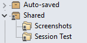

Partage de sessions


Partage de sessions |
|
|
Plusieurs utilisateurs peuvent partager des sessions en utilisant un fichier de sessions partagées. Pour créer un fichier de sessions partagées 1.Sélectionnez Outils > Exporter les paramètres pour créer un package de paramètres (.bcpkg) avec un sous-ensemble de vos sessions. 2.Placer le fichier package dans un dossier partagé approprié. Pour accéder à un fichier de sessions partagées 1.Sélectionnez Outils > Options 2.Sur la page Astuces, dans la section Fichier de sessions partagées, entrez la localisation du fichier package. Les sessions partagées apparaîtront alors comme une nouvelle branche dans l'arbre des Sessions : 
Notez que les sessions partagées sont en lecture seule et ne peuvent pas être modifiées dans Beyond Compare. Pour modifier des sessions partagées, vous avez besoin de recréer le fichier package comme décrit ci-dessus. |